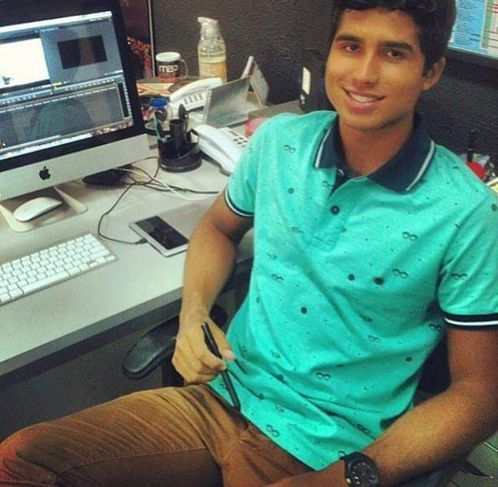

Kaio Felipe Homem

(55) 49 991365411 | kaiokateto@gmail.com
LinkedIn
Experiência e habilidades
-
Engenheiro de Café e Ctrl+C/Ctrl+V Sênior — Google Tradutor Ltda (2023)
Especialista em copiar soluções mágicas do Stack Overflow, colar no
projeto e torcer pra compilar. Responsável por 98% do sucesso do time —
os outros 2% foram sorte e reinício do computador.
-
Desenvolvedor de Tela Azul — Microsoft Mood Agency (2022) Atuei
diretamente na criação de bugs inovadores e mensagens de erro com
significado espiritual. Líder do projeto “Funciona na minha máquina” e
mentor de juniors que acreditam em milagres de deploy.
Arquiteto de Gambiarras Web — Freelancer (desde sempre) Criação de
sistemas funcionais sem documentação e com comentários enigmáticos como
“não apagar isso”. Mestre em soluções temporárias que viram permanentes.
Especialista em fazer o impossível... até dar erro.
Como quero trabalhar
-
1 hora por dia de trabalho, 30 minutos de almoço e 20 minutos de descanso. Cafeteira na minha mesa. O restante do tempo usarei apenas para testes de jogos em ps3 e ps4, gosto de Mortal Kombat 1, 9, X e 11.
-
No mínimo 40k por mês, mas aceito propostas de 80k com 30 minutos de trabalho por dia e 50 minutos de almoço.
-
Por semana uma viagem de 4 dias pela Europa, com tudo pago pela empresa, hotel 5 estrelas.